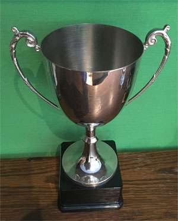
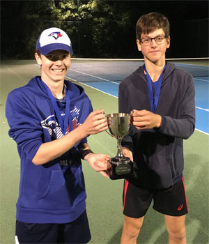
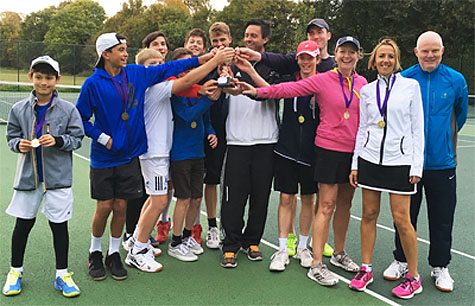
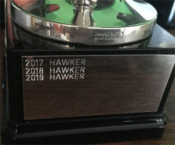

Previous: The Bryan Brothers - Principles of Winning Doubles | 🏠 Strategy Home | Next: The Elements of Game Style
The Cup
Comprehensive unified tennis knowledge base — Fundamentals, Stroke Analysis, Reference Library, and more
The Cup
Nick Wheatley

A Davis Cup style competition.
In this series we've been looking at the process of creating marginal gains to win matches. (Click Here.) In this article I want to give an example of how this work was the difference for my team in the biggest interclub match of the year.
This is a true story from 2018 when I was captaining my home club for an all-day team event against another local club, with a cup at stake for the winners. I believe marginal gains made the difference between winning and losing.
This was the 2nd annual staging of this cup event, and we had been victorious on home soil the year before. This time, we were the away side, and facing a club who were highly motivated to square the series at 1-1.
Davis Cup Format
As with the first match, myself and the opposing captain agreed there would be 9 age groups from Under 10's through to Men's and Ladies, and each tie would follow the old-style Davis Cup format with two singles players and a doubles team in each age group.
Every match was one set. The singles sequence would be Home 1 versus Away 2, then Away 1 versus Home 2, then doubles, and then reverse singles if needed. We also agreed that teammates could remain on court to support players, and we captains could step in to coach at change-overs, which led to a unique and very exciting format.
I followed very much the same preparation method as the previous year, and this is what it involved. First, training sessions in the 2 weeks prior to the event involved trying to recreate the unique environment we would be in.

Pre match preparation made for fast starts and led to some upset victories.
This meant having players court side cheering on the 2 or 4 players on the match court, and they were encouraged to be very loud. Meanwhile, all our players were being prepped for what to expect, in terms of spectators and the opposition coach talking to his players on change overs.
Those who had not been to the club before were shown photos of what the club looked like, including the entrance and the courts, so it wouldn't be totally unfamiliar when they arrived. Furthermore, given the format, we could hazard a guess at likely match-ups for the first match and second match. Our number 2 players were all prepped that they would be the first match on, and taking on the number 1 from the opposition.
On to match day itself! There would be no opportunity to practice at the venue, so all our players had a scheduled 45 minute slot on our home courts (the same surface as the other club), to go through their pre-match practice routine before making their way over. (Click Here for the article on what to do in the pre-match warmup.)
When they arrived, they were fully prepared, warmed-up, and knew what to expect. Of course, you can never cover all scenarios that might play out on the day, so I always add the phrase “expect the unexpected" so our players are ready to stay calm when things happen that we couldn't have foreseen.
On arrival, the opposition captain had forgotten the agreed format, and was ready to put two singles matches from the same age group on at the same time. When prompted, he immediately remembered the correct format, but the point is that his players were not prepped about the order of matches beforehand.
As the day went on, it was also clear that some of his players hadn't hit any balls before arrival, and there were occasions when we got fast starts that we might not have done otherwise. Since the scoring format was that every match was one full set to 6, fast starts were extremely valuable indeed.

Our team after the victory.
We were surprised by how strong they were overall, they certainly had a significantly stronger squad than we did. However, a few upset wins from our Number 2 singles players in the first matches set us on our way to picking up some valuable ties.
It came down to the Ladies, a tight and tense affair that we somehow managed to come through and score the all-important 5th winning tie for the club. Our number 1 had to save a match point before winning her first singles match, and had she not come through, we would not have been in a favourable position.
The finest margins separated us from our opponents at the end of the day, and without the commitment to full and proper preparation, I'm quite sure the result would have been different.
As with all efforts to gain an extra 1-2% here and there, there is never a guarantee of victory. The goal is to increase your chances ever so slightly. And on this day, that slight increase was enough to get us over the line. No outcome is guaranteed, but a 65% chance of winning is always better than a 64% chance, just like a 10% chance of winning is better than a 9% chance.

We won again in 2019—called a Three Peat in American sports.
Marginal gains is all about boosting your percentage chance of winning by small amounts, that over time will lead to a greater number of victories and achievements, and who knows, perhaps a really important one somewhere that you'll remember for a long time!
Three Peat
Just a side note to say that the other club coach came fully prepared for the third edition of the Cup event the next year. It was a glorious day's tennis, with more ties than ever before going to a fifth and deciding rubber, and thankfully we managed to secure a third straight cup win by the narrowest of margins once again!
Next, moving to the final section in this series, I will next take a look at how you can achieve some marginal gains during play, once the “start of point" has played out, and the rally isn't yet over. Also, handling both minor and major momentum shifts in matches so that you can take more advantage of them when they go in your favour, while restricting the damage when you're on the receiving end.

Nick Wheatley is an LTA Performance Coach and head coach at Hawker Tennis in south west London. His junior teams, the Hawker Jets, have won 44 competitions since formation, and over the last 2 years alone, his junior players have won 19 singles tournaments between them at county level.
He has been ranked in the top 75 nationally in 35 and over singles and in the top 5 in Surrey county. Nick has done video analysis for numerous players at all levels, including former British Top 10 player Marcus Willis.
His unique teaching video series, covering every aspect of the game, is available on his website www.nickwtennis.com
You can also contact Nick directly via the homepage of his website.
Source: tennisplayer.net archive — The Cup.docx (John Yandell teaching library, 2002-2022). Extracted and rendered as HTML for Tennis Future Lab.